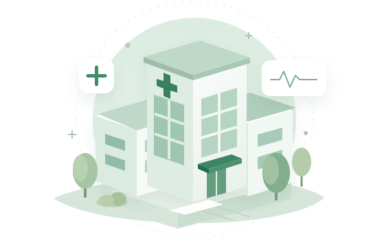

Ocupación de camas
—0de 0 camas ocupadas
- Libres 0
- Ocupadas 0
- Mantenimiento 0
Pacientes, triaje, centros, áreas y camas. Todo en un mismo lugar.
Simplifica el registro de pacientes, la clasificación por gravedad y la administración de camas y áreas de tu red médica. Dedica más tiempo a lo que importa: las personas.

0de 0 camas ocupadas
Ordenados por nivel de triaje: el Nivel I se atiende primero.
| Paciente | Triaje | Motivo | Cama |
|---|
Registra sus datos personales, información de contacto y asignación de triaje y cama.
Nuevo registroEncuentra pacientes por cédula o apellidos y consulta su información de atención.
Buscar un pacienteOrganiza tu red de atención con la ubicación y los datos de cada centro médico.
Ver centros médicosAdministra las áreas y los tipos de atención de cada centro de tu red médica.
Ver áreas hospitalariasRegistra el nivel I a IV, el motivo y los signos vitales con fecha y hora para priorizar la atención.
Registrar triajeControla habitaciones y camas por área, consulta las libres y asigna una al paciente.
Ver disponibilidadTus registros se guardan en la base de datos del programa.